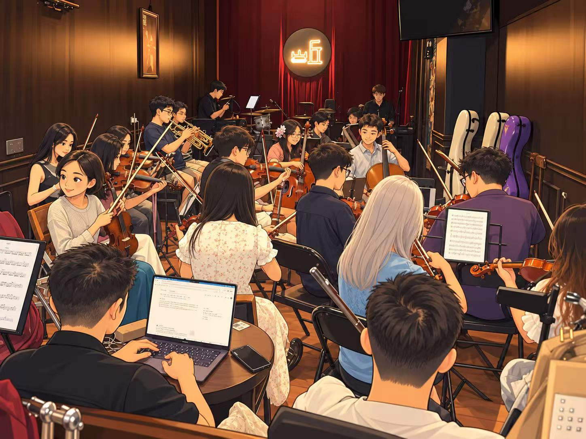

喵咪休息室
等你摸摸你来啦！
今天也想贴贴。
今天也想贴贴。
轻轻点一下，收获一声呼噜
哈基米的羁绊分0 / 100
不必赶进度。今天的任务，只是陪它待一会儿。
摸摸不消耗音符；喂食消耗 10 音符、羁绊分 +1，每天最多 3 次；摸摸与逗猫每日合计最多 +1 分；逗猫会花一点精力。休息能恢复精力，离开页面也不会让猫咪变差。
拍张纪念照，存进你的回忆相册。
从排练间隙到下一次合奏，翻开伙伴的专属日常。
从原曲 00:00 到完整尾声，跟着鼓点演奏。
完成三题后，按得分领取音符；编队伙伴共享合奏羁绊额度。
不必把每一天过得特别。我们记住的，都是小事。

戴上耳机，一起开启今天的乐团故事。